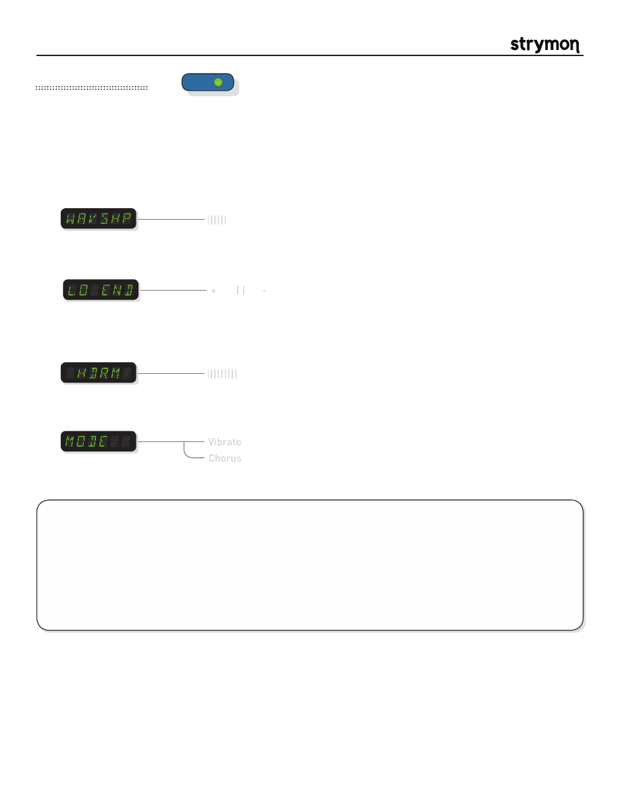

Mobius
-
User Manual
®
pg 11
TYPE
push (bank/BPM)
hold (save)
push (param)
hold (global)
VALUE
PARAM 1
PARAM 2
B
TAP
A
SPEED
DEPTH
LEVEL
BANK DOWN
BANK UP
FILTER
DESTROYER
VIBE
ROTARY
FLANGER
PHASER
CHORUS
FORMANT
AUTOSWELL
VINTAGE TREM
PATTERN TREM
QUADRATURE
®
Mod Machines: Vibe
A recreation of the late ‘60s “vibe” circuit which was one of the first modulation effects of its time. A staple in classic rock
lead guitar of the era and originally intended to be a recreation of a rotary speaker sound, the vibe has its own unique niche in
the world of modulation.
PARAMETERS:
Mode
:
Toggles the vibe mode between vibe (vibrato) and chorus.
Vibrato
Chorus
TIPS & TRICKS:
The DEPTH knob changes the character of the VIBE from a smooth pulsing to a warbled undulation, most noticeable at
slower speeds. For maximum throb, set the LO END param to the ‘+’ side.
The quintessential VIBE sound occurs in the VIBE machine’s CHORUS mode. This mode combines the input signal with
the wet effect signal, producing the psychedelic phasey sound. The vintage vibe effects had a switch that removed the
unaffected dry signal from the output, which results in a unique ‘phase-shift vibrato’. Select the VIBRTO mode for this
vibrato effect. Try setting the WAVSHP param to maximum to get some vintage-amp-inspired vibrato mojo.
||||||
Waveshape
:
Varies the shape of the LFO by warping its waveform and duty cycle.
+
| | -
Low End Contour:
Allows for shaping the low-end from full low-end to progressive high-passing.
|||||||||
Headroom
:
Adjusts the amount of distortion within the vibe circuitry. Set to maximum for the
cleanest vibe tones, and dial back to add the feel and grit of dirtier vibe tones.